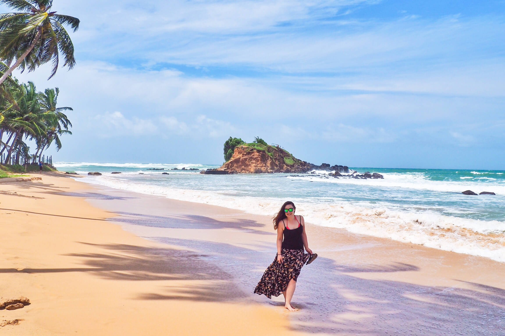
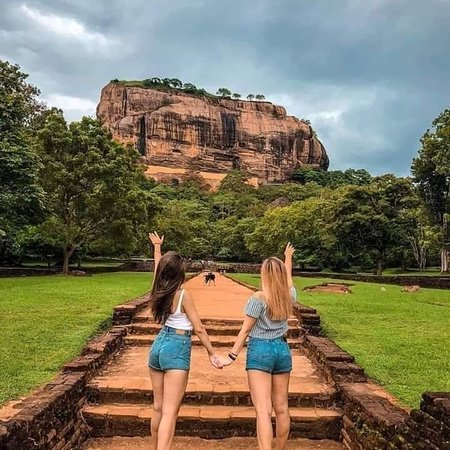

Sri Lanka, "previously known as Ceylon" is an island that situtated in South Asia. "The country is known for vast plains, pleanty of mountain views, tea plantations and beautiful temples." "Sri Lankan economy centered around the export of tea, coffee, clothes rubber and coconuts." Because of many attaractions around the country, tourism is the biggest income for the country |
 |
Whale Watching Tour
Surrounded by the Indian ocean, Sri Lanka is another unique country in the world to have the privilege of whale watching In between February and mid-March. Whale watching are available in different locations and different climates and boat-based whale watching tours are available. Whale watching tours are available in Galle and Mirissa . |
 |
Yala National Park
Situated in the southern seaboard, Yala National park is one of the greatest wildlife destination to witness the nature of the Sri Lanka. Yala is home to 44 mammal species and 215 bird species. Also, Yala is well known for having 102 leopards. Best time to visit to Yala in dry season from February to June. |
 |
Sigiriya
“As the 8th wonder of the world, Sigiriya is the one of the most valuable symbol in Sri Lanka.” The Sigiriya fortress complex has one of the significant archaeological features that attracts both the local and foreign visitors all over the world. |
 |